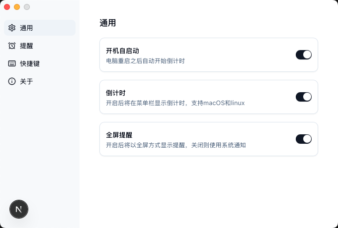
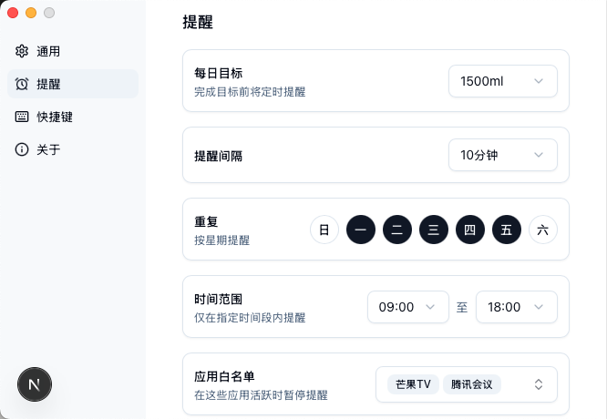

每日饮水目标
按你的体重与作息设定目标，进度随手可见，达成时用一声轻响给你正反馈。
从目标设定到记录复盘，Shui 把喝水的每个环节都做得刚刚好。
按你的体重与作息设定目标，进度随手可见，达成时用一声轻响给你正反馈。
优雅且不可忽视的全屏提示，帮你真正离开椅子；开会时自动避让，不打扰重要时刻。
自定义提醒间隔与生效时间段，自动识别工作日，午休和下班后不再被打扰。
全屏通知、系统原生通知、托盘实时倒计时，总有一种适合你当前的工作状态。
近 7 天或 30 天趋势、日均饮水量、达标天数、饮水时间分布，一眼看清习惯的变化。
一键记录 50 / 100 / 200 / 300 ml，JSON 备份与导入只在缺失时补全，数据始终留在本地。
浅色、深色、跟随系统三套主题，设置与提醒都保持同一套视觉语言。


同一套提醒逻辑，覆盖桌面与移动端，习惯不因换设备而中断。
应用白名单默认包含腾讯会议、Zoom、Google Meet 与 Microsoft Teams，检测到这些应用在前台时会自动延后提醒。你也可以自行添加需要专注的应用。
息屏、锁屏或系统休眠时会自动暂停计时，回到电脑前再继续，不会产生成串的补发提醒。
不会。饮水记录、设置与统计数据都保存在本地，可通过 JSON 备份文件自行导出与导入。
可以。提醒规则支持自定义时间范围与工作日自动识别，周末与节假日默认保持安静。